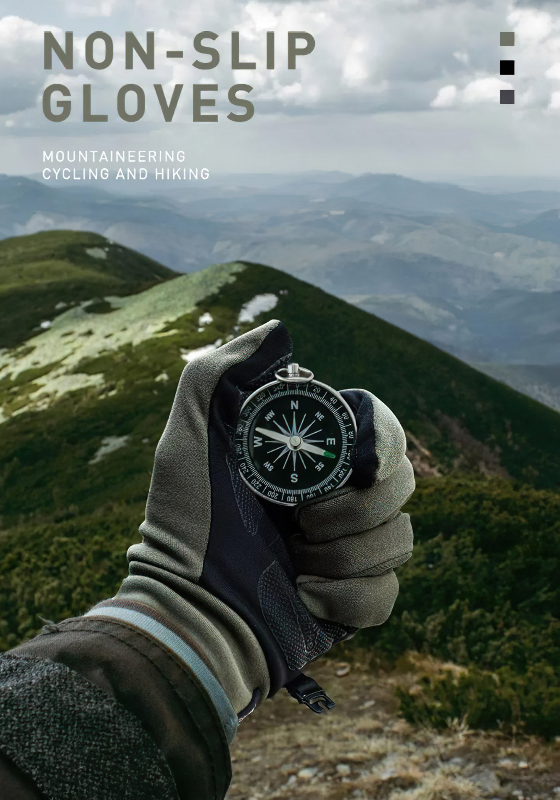
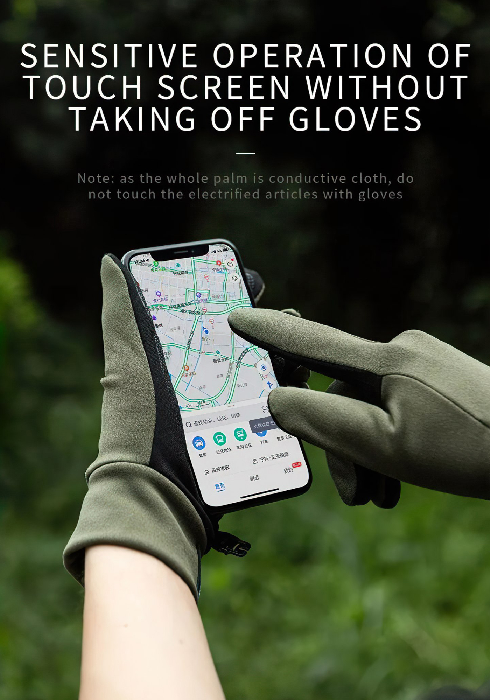
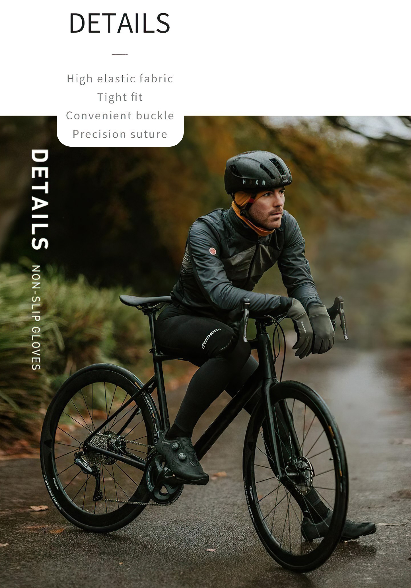
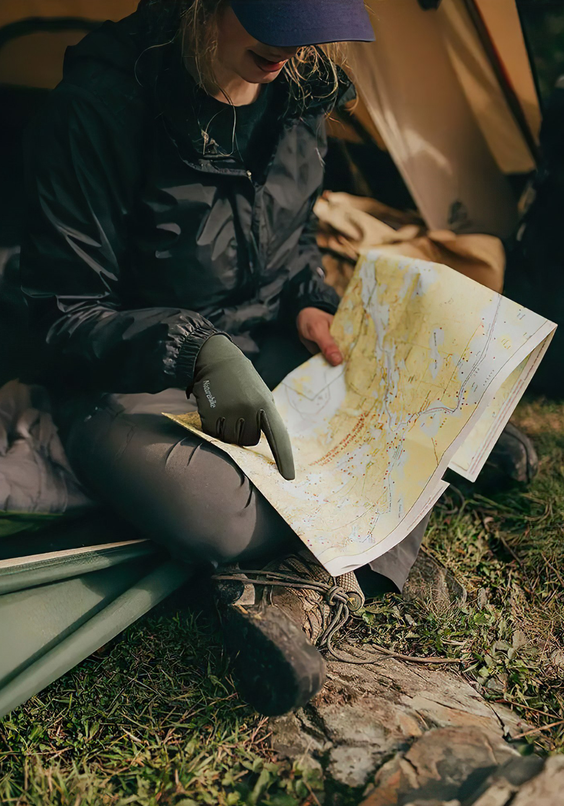
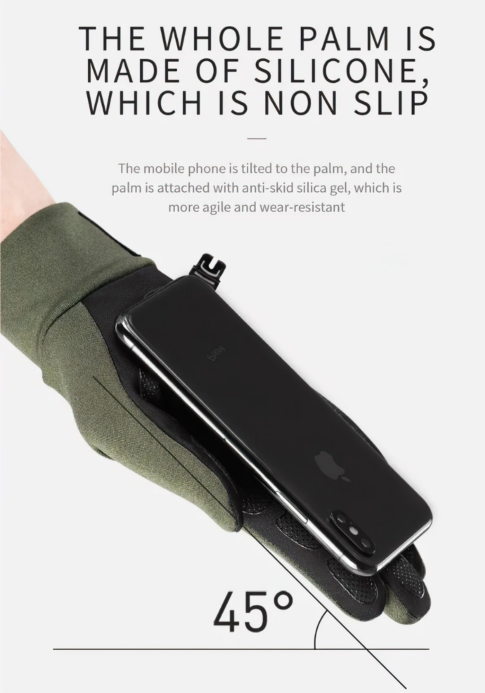
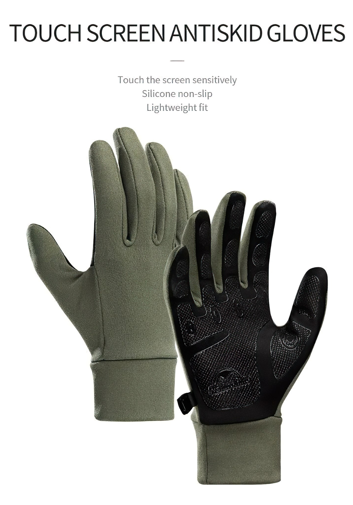
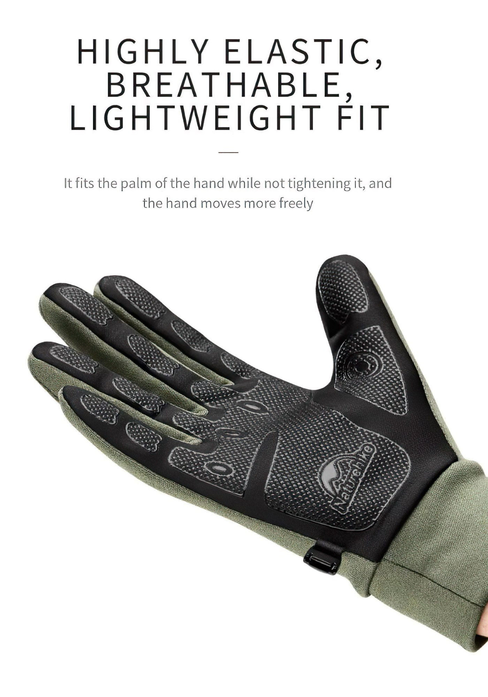
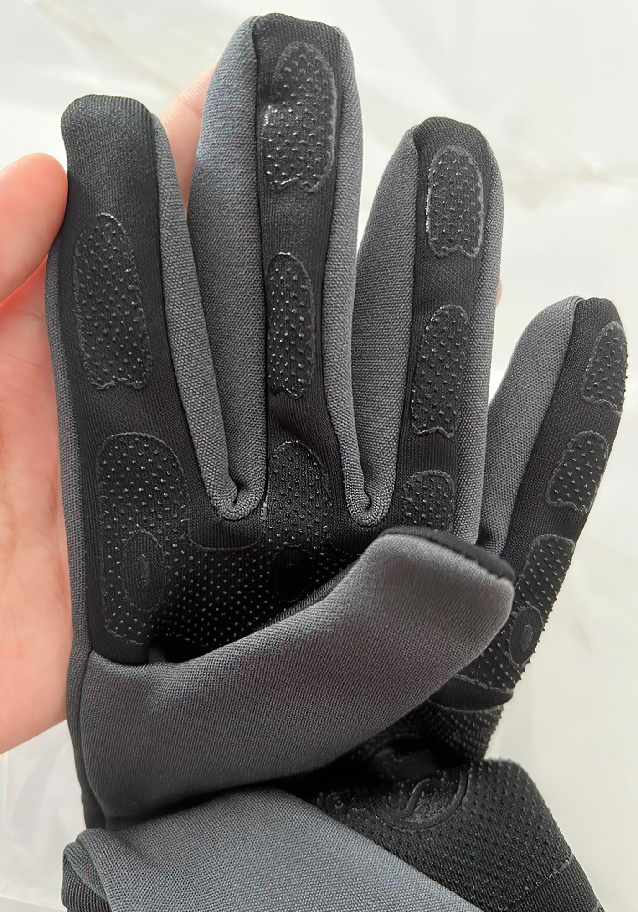
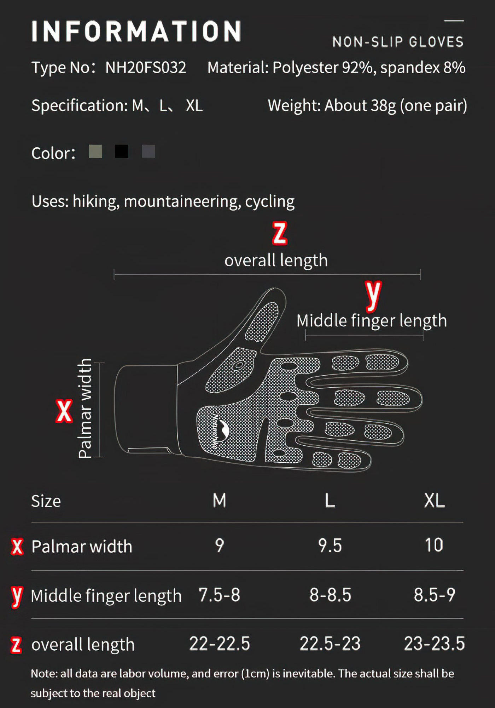

THÔNG TIN SẢN PHẨM
|
THƯƠNG HIỆU |
NatureHike |
|
SẢN PHẨM |
Chính hãng |
|
SIZE |
M/L/XL |
|
KÍCH THƯỚC SỬ DỤNG |
+ Độ rộng cổ tay: M: 9 cm, L: 9.5 cm, XL: 10 cm + Ngón tay giữa dài: M: 7.5-8cm, L: 8-8.5 cm, XL: 8.5-9 cm + Độ dài găng tay: M: 22-22.5cm, L: 22.5-23cm, XL: 23-23.5cm |
|
CÂN NẶNG |
38g |
|
CHẤT LIỆU |
Vải polyester 98% và vải spandex 8% |
Mô tả ngắn về sản phẩm
CÔNG DỤNG SẢN PHẨM
Khi tham quan, đi phượt hoặc chơi thể thao ở những nơi có thời tiết lạnh giá, ẩm ướt, đeo găng tay là việc bạn cần làm để giữ ấm cho cơ thể. Thế nhưng, những loại bao tay hiện giờ để có thể giữ ấm tối ưu đa số quá dày và bị thấm nước, đặc biệt rất khó để hoạt động thể thao hay sử dụng điện thoại. Để đáp ứng được những nhu cầu đó, Găng Tay Giữ Ấm Cảm Ứng Chống Trơn Trượt Naturehike ra đời. Nhờ thiết kế thông minh của găng tay NatureHike, người sử dụng có thể thoải mái sử dụng điện thoại ở thời tiết lạnh giá mà không phải sợ rơi, vỡ điện thoại hay không nhạy màn hình do không tháo găng tay. Ngoài ra, nhờ lớp chất liệu cao cấp, găng tay NatureHike sẽ giúp bạn giữ ấm đôi tay một cách hiệu quả nhất, đem lại cảm giác thoải mái cho đôi tay trong cả khi thời tiết khô lạnh.
 
Chất liệu vải lông cừu và vải nhung mềm mại giúp giữ ấm cực tốt. Kiểu dáng dài ngón của găng tay phượt mùa đông giúp bảo vệ cho đôi tay của bạn không bị lạnh bởi nhiệt độ thấp, sương mù.
Độ đàn hồi cao, thoáng khí, nhẹ và mỏng vừa vặn với lòng bàn tay, không bị bó chặt, di chuyển thoải mái hơn
Cảm ứng đầu ngón tay nhạy, giúp bạn thuận tiện khi sử dụng điện thoại thật tuyệt vời khi bạn vừa giữ ấm được đôi bàn tay mà còn có thể sử dụng điện thoại một cách dễ dàng.
 
Toàn bộ lòng bàn tay được thiết kế chống trượt, giúp cầm nắm nhanh và tốt hơn góc nghiêng 45 độ.
Khả năng cản gió, đi mưa bay, sương, tuyết thoải mái (không đi mưa to)

Mặt trong có lót nỉ siêu êm, mềm và nhẹ giúp giữ ấm.
Lòng găng tay, các đầu ngón tay đều phủ nhiều vân cao su hình lục giác, giúp tăng độ ma sát, chống trơn trượt
Phần cổ găng tay làm bằng chất thun co dãn giúp điều chỉnh theo cổ tay của người sử dụng sao cho vừa vặn nhất.
Găng có chốt cài nối 2 chiếc, tránh thất lạc khi không sử dụng bên trong lòng bàn tay có logo nổi của hãng.
   